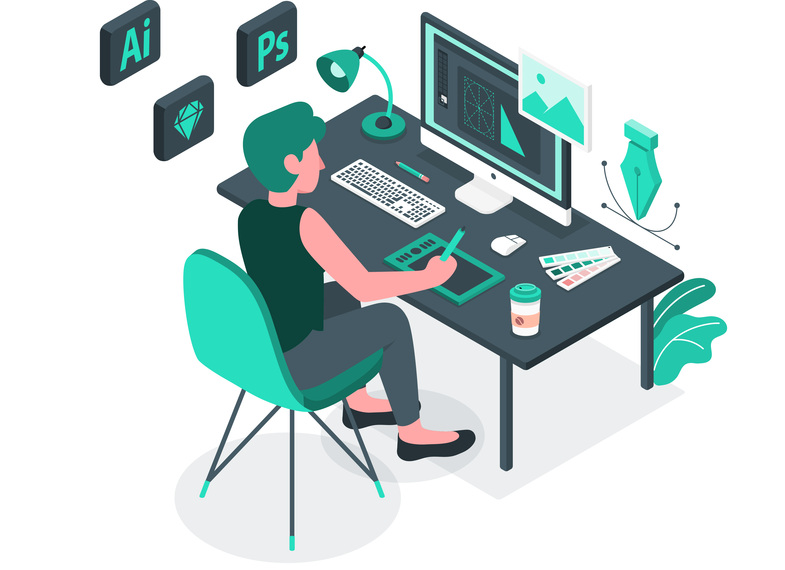
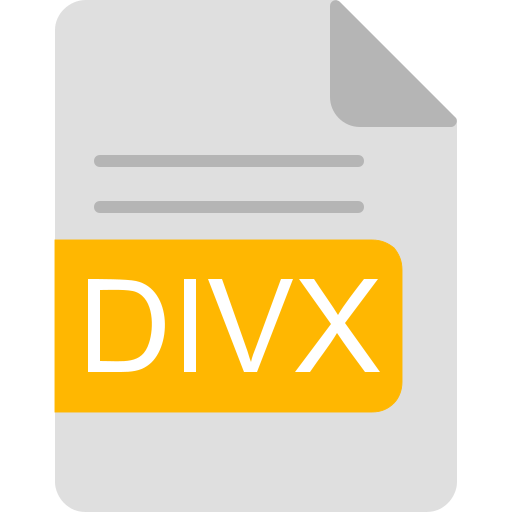
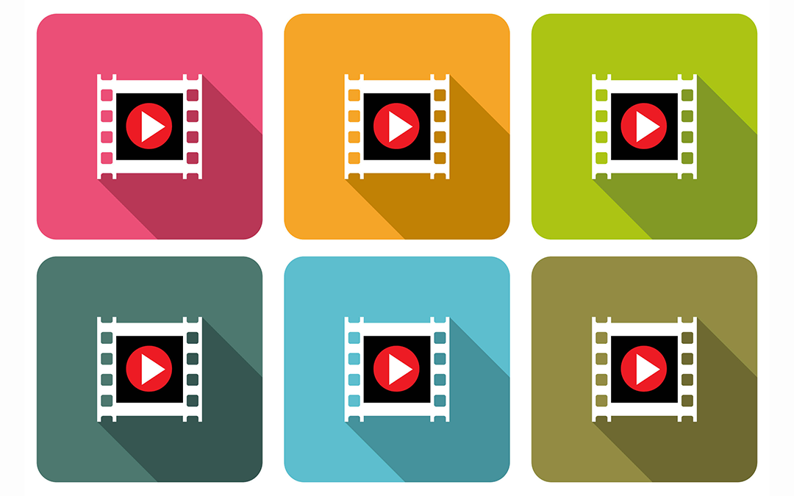

Formato de audio ampliamente utilizado debido a su equilibrio entre calidad y tamaño de archivo.
Diseño visual
Diseño visual para una mejor experiencia web. El diseño visual es un componente fundamental en el desarrollo de sitios web y aplicaciones digitales. A través de imágenes, colores, tipografías, videos y otros recursos multimedia, es posible comunicar información de manera clara y atractiva. Sin embargo, además de la apariencia estética, es importante considerar aspectos como la optimización de recursos y la velocidad de carga para ofrecer una experiencia satisfactoria al usuario.
¿Qué es el diseño visual?
El diseño visual es la disciplina encargada de organizar elementos gráficos y multimedia con el objetivo de comunicar información de forma efectiva. En el entorno digital, estos elementos permiten captar la atención de los usuarios, facilitar la comprensión de los contenidos y mejorar la experiencia de navegación.Un diseño visual efectivo busca el equilibrio entre estética y funcionalidad, garantizando que los recursos utilizados no afecten negativamente el rendimiento del sitio web.

Formatos de imagen para la web
Las imágenes son uno de los recursos más utilizados dentro de los sitios web. La elección del formato adecuado influye directamente en la calidad visual y el tiempo de carga.
Formatos de audio digital
El audio puede complementar la experiencia del usuario en sitios educativos, multimedia o interactivos.
Ofrece alta calidad de sonido, aunque genera archivos considerablemente más pesados.
Proporciona una mejor compresión que MP3 manteniendo una buena calidad de audio.
Formato sin pérdida de calidad, utilizado cuando se requiere máxima fidelidad de sonido.

Formatos de video para la web
Los videos permiten enriquecer los contenidos y mejorar la comprensión de conceptos complejos. Sin embargo, deben utilizarse adecuadamente para evitar problemas de rendimiento.
Es el formato más utilizado debido a su compatibilidad con la mayoría de navegadores y dispositivos.
Códec de compresión que permite mantener una buena calidad visual reduciendo el tamaño del archivo.
Formato utilizado anteriormente en plataformas basadas en Flash, actualmente en desuso.

Tecnologías de compresión que buscan reducir el peso de los videos manteniendo una calidad aceptable.

Optimización y velocidad de carga
La velocidad de carga es uno de los factores más importantes para la experiencia del usuario. Un sitio lento puede provocar que los visitantes abandonen la página antes de acceder a la información.
Beneficios
● Mejora la experiencia de usuario.
● Reduce los tiempos de carga.
● Favorece el posicionamiento en buscadores.
● Optimiza el consumo de datos en dispositivos móviles.

Técnicas
● Utilizar formatos modernos como WebP.
● Comprimir imágenes antes de publicarlas.
● Reducir el peso de los videos.
● Utilizar recursos multimedia adaptados a la web.
● Implementar carga diferida (lazy loading).

Buenas prácticas en diseño visual
Para lograr una experiencia efectiva es recomendable seguir ciertas buenas prácticas:
✔Utilizar imágenes optimizadas.
✔Mantener una identidad visual consistente.
✔Priorizar la legibilidad de los contenidos.
✔Diseñar pensando en dispositivos móviles.
✔Evitar la saturación de elementos visuales.
✔Equilibrar calidad visual y rendimiento.
✔Seleccionar formatos adecuados para cada recurso multimedia.

Herramientas útiles
Google PageSpeed Insights
Permite analizar la velocidad y el rendimiento de una página web.
TinyPNG
Herramienta para comprimir imágenes sin perder demasiada calidad.
Squoosh
Aplicación web para optimizar imágenes y convertir formatos.
GTmetrix
Plataforma para medir el rendimiento y detectar oportunidades de mejora.